Lijnen die blijven staan.
Een kleine shop in de August van Daelstraat, waar Barrie traditional en flash zet. Elke stijl is welkom, van fijne lijntjes op je vingers tot een stoere rug.
5,0★★★★★63 reviews op Google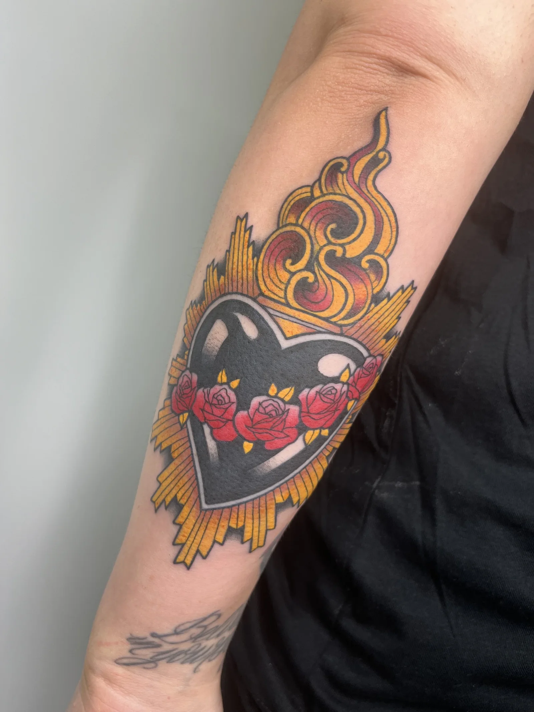
Dik zwart,
scherp rood.
Traditional, flash, black and grey en fijne lijntjes. Een greep uit wat de laatste weken in de stoel gebeurde.
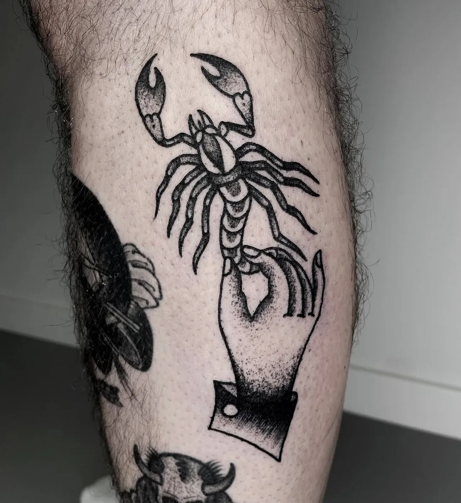
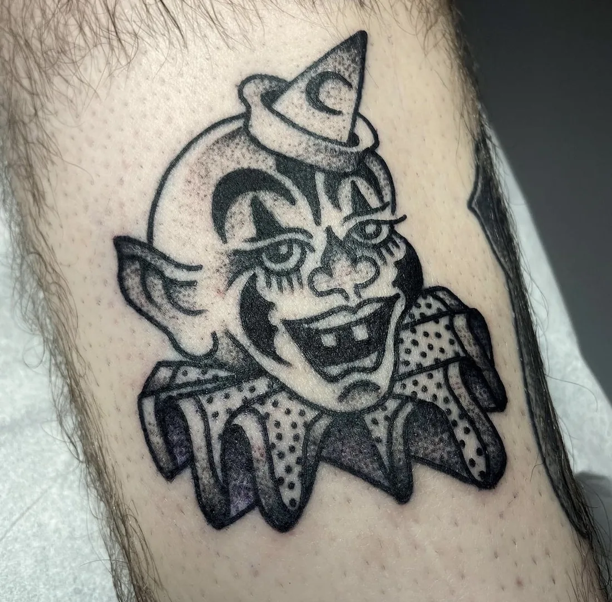
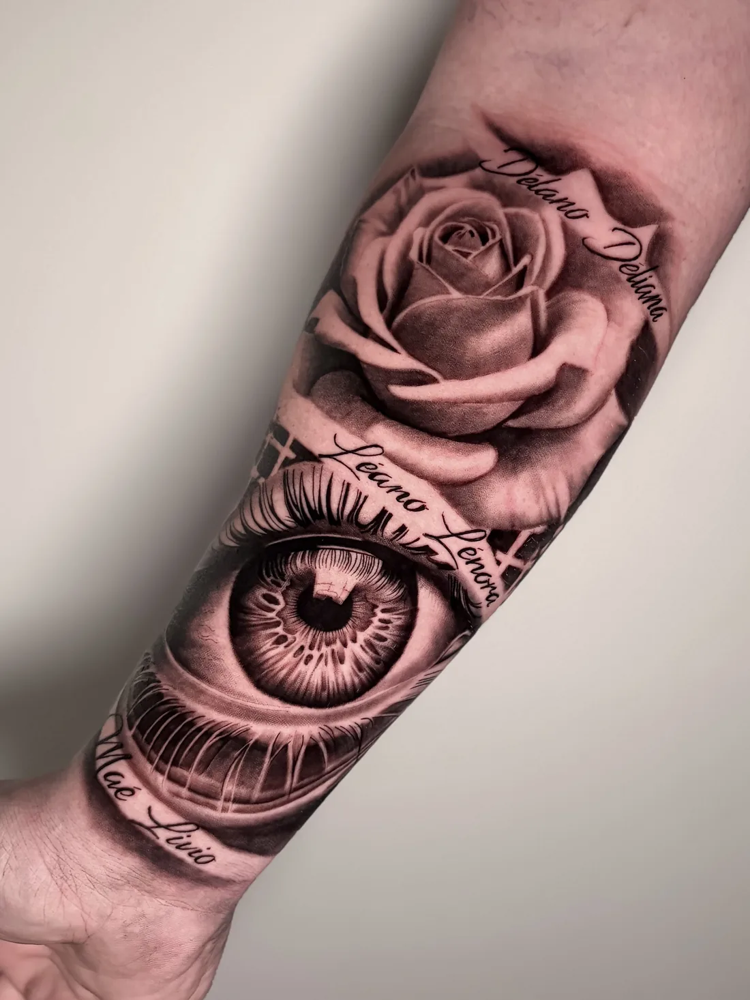
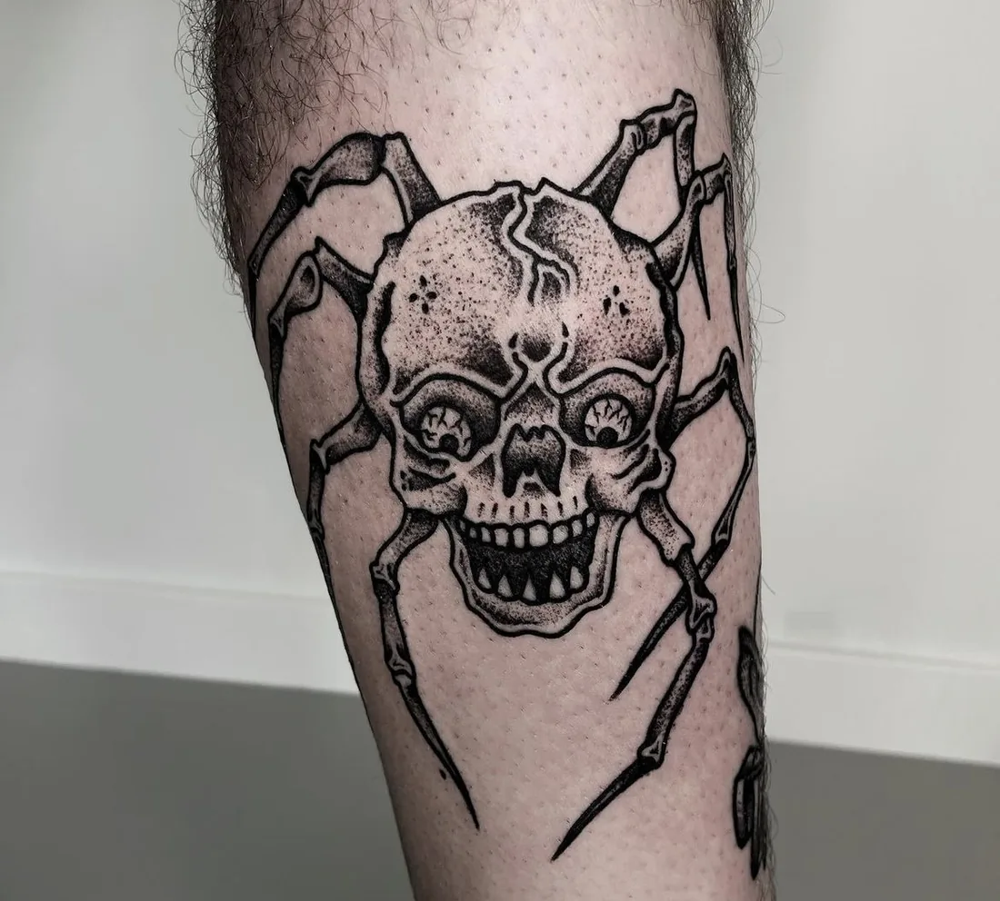
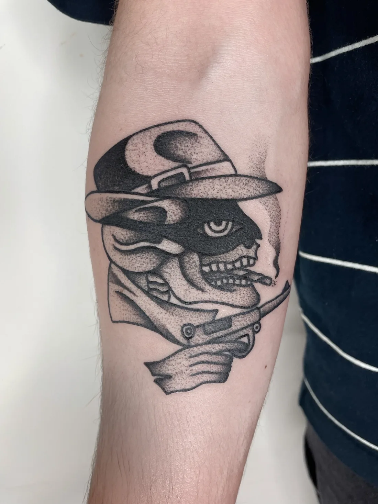
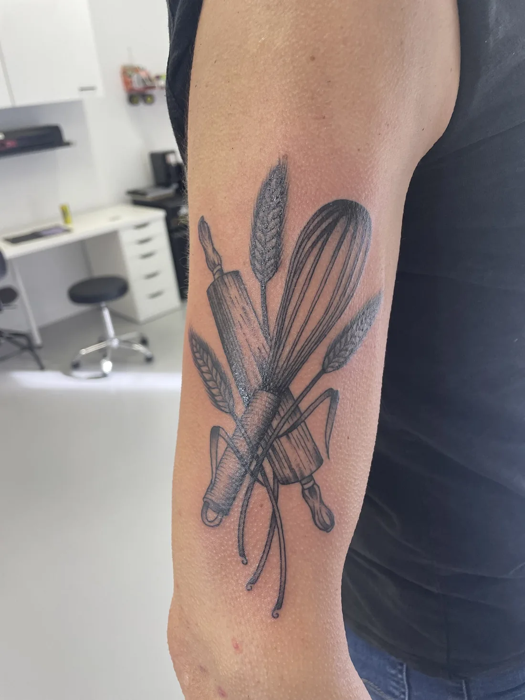
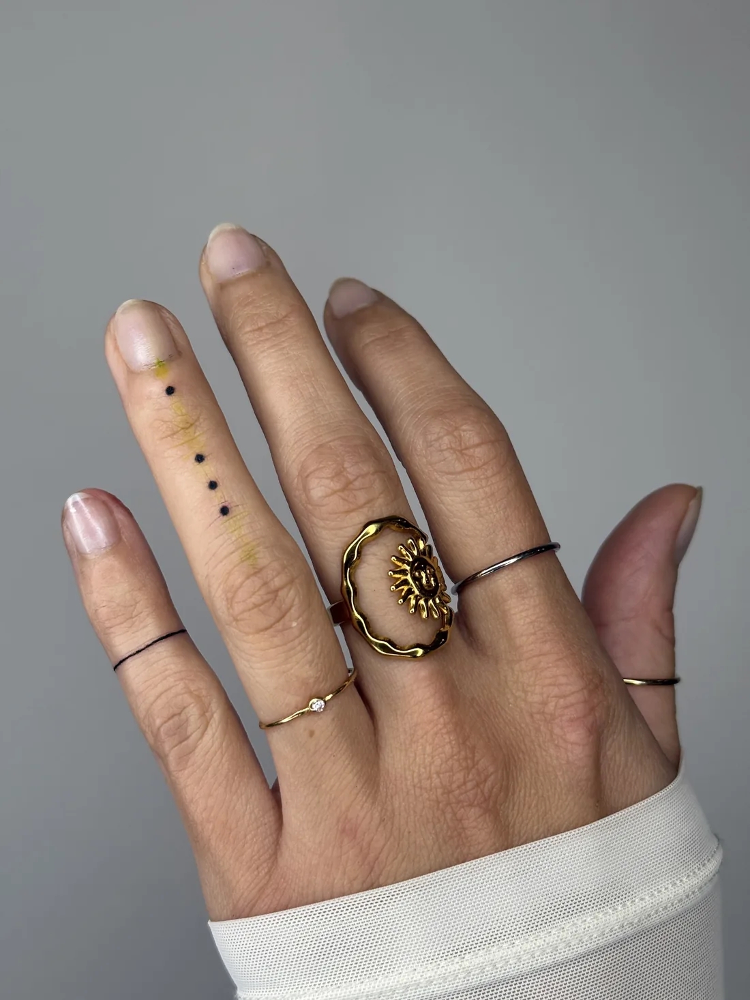
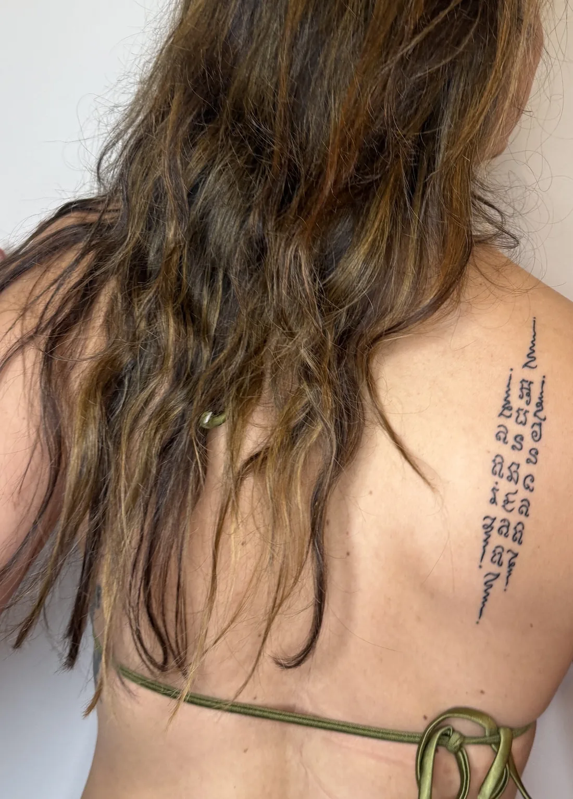
Klein, en dat is net de bedoeling
Bij Black Rain zit je niet in een drukke wachtzaal. Barrie en Tara ontvangen je zelf, met goeie muziek op de achtergrond.
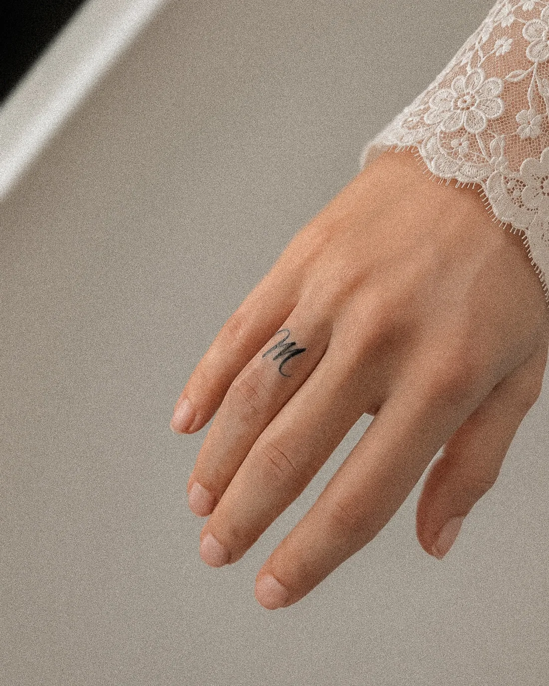
- 01
Tijd voor jouw idee
Je vertelt wat je wil, wij luisteren en tekenen mee. Pas als het klopt, gaat de naald erin.
- 02
Eerlijk over cover-ups
Een oude tattoo waar je niet blij mee bent? We bekijken samen wat er mogelijk is en zeggen eerlijk wat wij zelf zouden kiezen.
- 03
Elke stijl welkom
Barrie zet vooral traditional en flash, maar ook black and grey en hele fijne lijntjes kunnen hier.
- 04
Eigen parking
Je parkeert gewoon aan de shop. En word je even duizelig, dan staat er koffie of een drankje klaar.
Tara is de perfecte gastvrouw en Barrie zijn tattoo skills zijn next level.Stellier op Google
uit 63 reviews
Na 15-20 tattoo’s te laten plaatsen door Barrie kan ik zeggen dat ik altijd warm ben ontvangen. Er wordt goed geluisterd naar wat mijn visie is en hij past dit op de best mogelijke manier toe. Na zoveel sessies is het voor mij thuis komen.Hannes Vanhemel op Google
Tara en Barrie hebben er daarentegen echt nog iets moois van weten te maken. Ze hebben uitgebreid de tijd genomen om samen met mij te bekijken wat er mogelijk was en hebben alle opties eerlijk besproken.Tanja Baalbergen op Google, over een cover-up
Iets in gedachten?
Stuur een bericht met je idee, de plek op je lichaam en eventueel een foto als voorbeeld. Zo kunnen we meteen meedenken over je ontwerp.
Adres
August van Daelstraat 532610 Wilrijk (Antwerpen)
Eigen parking aan de shop.
Openingsuren
- Maandag10u tot 17u
- Dinsdag10u tot 17u
- Woensdag10u tot 14u
- Donderdag tot zaterdag10u tot 17u
- Zondaggesloten